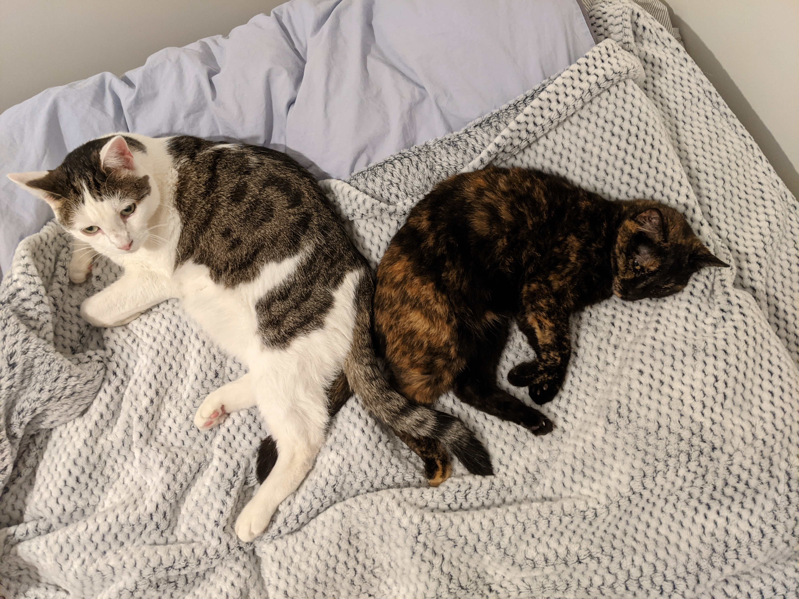
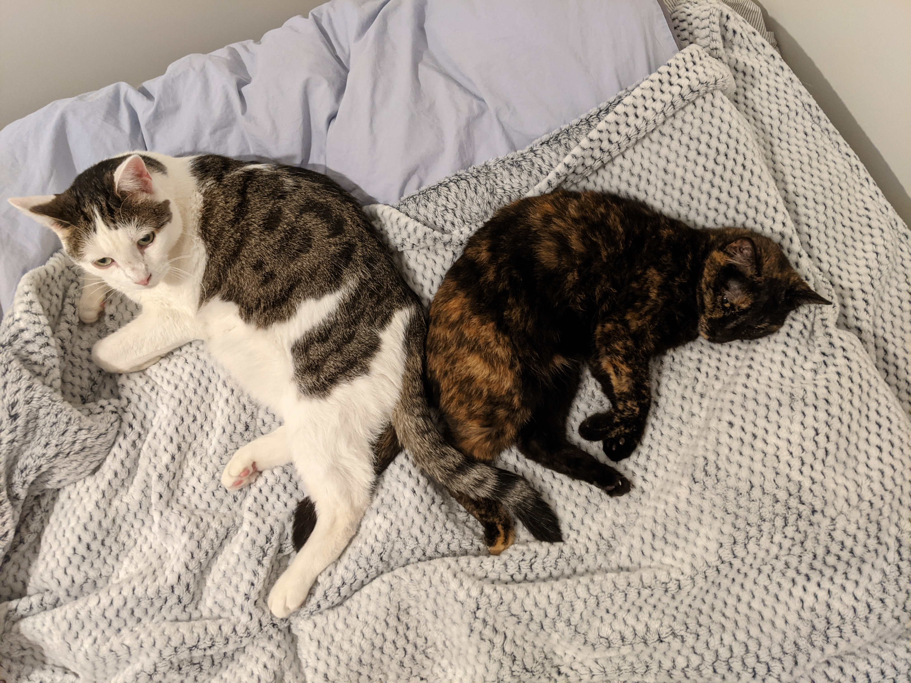

Adèle Hénot-Mortier
Linguist
Linguist
I am 4th year PhD student in Linguistics at MIT. Before doing linguistics, I studied theoretical Computer Science and a bunch of other unrelated stuff in my home country, France. My current areas of interest are experimental linguistics (with a focus on acquisition), the syntax-semantics interface, and pragmatics. I am also have a few NLP projects on the side, with the general goal of evaluating recent language models (embedding in particular) w.r.t. fine-grained linguistic phenomena. In my spare time I love to tinker with old bikes, collect and repair vintage handheld consoles, watch stupid animes, hunt for free food on campus, and play with my two darling cats Sacha and Pixel.


 
